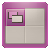
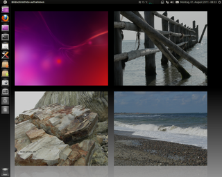
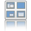
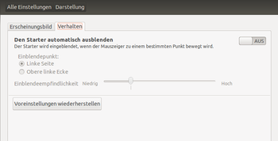
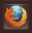

Unity Arbeitsbereich
Dieser Artikel wurde für die folgenden Ubuntu-Versionen getestet:
Ubuntu 16.04 Xenial Xerus
Ubuntu 14.04 Trusty Tahr
Die folgende Beschreibung ist ein Auszug zu den Einstellungen vom CompizConfig_Einstellungs-Manager (auch kurz CCSM benannt), die für Unity, das Startmenü und die Arbeitsfläche von direkter Bedeutung sind. Die Beschreibungen hier beschränken sich auf die Aspekte, die hinsichtlich Unity zu beachten sind.
Die anderen Einstellungen sind weiterhin unter dem CompizConfig_Einstellungs-Manager beschrieben - was von den dortigen Positionen unter Unity nicht anwendbar ist, ist nicht Gegenstand dieser Beschreibung.
Voraussetzungen¶
Je nach Einstellung von Compiz können einige der nachfolgend beschriebenen Funktionen nicht ausführbar sein. Dieses trifft insbesondere auf Tastenkürzel zu. Um Korrekturen der Einstellungen vornehmen zu können, muss das folgende Paket installiert sein:
compizconfig-settings-manager
 mit apturl
mit apturl
Paketliste zum Kopieren:
sudo apt-get install compizconfig-settings-manager
sudo aptitude install compizconfig-settings-manager

Einstellung Arbeitsflächen¶
Anzahl und Anordnung¶
Man kann im CompizConfig Einstellungsmanager, unter dem Reiter
"Allgemeine Optionen -> Desktop-Größe"
die Einstellungen für die
virtuelle horizontale Größe (2)
virtuelle vertikale Größe (2)
Anzahl der Desktops (1) (nicht ab 14.04)
verändern. Die Werte in Klammern sind die empfohlenen Standardeinstellungen – es kann auch mit anderen Werten gearbeitet bzw. experimentiert werden.
Mit Tastenkombination umschalten¶
Um auf eine andere Arbeitsfläche umzuschalten, wird die Tastenkombination Strg + Alt zusammen mit einer Pfeiltaste ( → + ↓ + ← + ↑ benutzt. Dabei wird die Übersicht, wie unter Umschaltung mit der Maus beschrieben, nicht eingeblendet, sondern nur eine symbolische Darstellung abhängig von der Fensteranordnung angedeutet und die zuletzt ausgewählte Richtung angezeigt. Die Einstellungen hierzu sind unter Desktoptafel zu finden.
Hinweis:
Es kann vorkommen, dass keine Reaktion erfolgt. Das ist damit begründet, dass mit der benutzen Pfeiltaste diese Richtung zum Umschalten nicht mehr zur Verfügung steht, weil die aktive Arbeitsfläche bereits in dieser Richtung angeordnet ist.

Hintergrundbilder für die Arbeitsflächen¶
Achtung!
Unter Ubuntu 14.04 kommt es nach Aktivierung dieses Plugins häufig zu einem Systemabsturz.
Die Standardeinstellung für Hintergrundbilder basiert auf den Einstellungen von Nautilus und lässt in der Regel nur ein Bild für alle Arbeitsflächen zu. Dieses kann man auch unter Unity einfach ändern, sofern das folgende Paket installiert ist:
compiz-plugins-extra
mit apturl
Paketliste zum Kopieren:
sudo apt-get install compiz-plugins-extra
sudo aptitude install compiz-plugins-extra
Einstellung Compiz¶
Man öffnet den CompizConfig Einstellungs Manager und geht zur Einstellung für die Hintergrundbilder (Wallpaper) und aktiviert diese mit der  . Dieses ist zu finden unter:
. Dieses ist zu finden unter:
"Werkzeuge -> Hintergrundbild (Wallpaper)"
Dort trägt man nun die Hintergundbilder ein, die man anzeigen will. Je nach Anzahl der Arbeitsflächen und Zahl der eingetragenen Bilder (am besten wählt man je Arbeitsfläche ein Hintergrundbild) wird nun beim Umschalten der Arbeitsflächen auch das Hintergrundbild gewechselt. Dieses ist dann auch in der Übersicht ( Strg + S ) sichtbar.
Man kann die Bilder einzelnen Arbeitsflächen zuordnen. Dazu markiert man mit der in der Maske ein Bild und verschiebt dieses mit den Buttons
"Hoch" bzw. "Runter"
Hinweis:
Mit dem nächsten Anmelden wird diese Einstellung dann wirksam. Man sollte das Abmelden durchführen, da es ansonsten zu einer verzerrten Darstellung der Desktops kommen kann.

Einstellungen Expo¶
Um die Arbeitsflächen auch mit der Maus bzw. mit einem Tastaturkürzel umschalten zu können, muss im CompizConfig-Einstellungs-Manager, die Funktion Expo gesetzt sein. Ab 14.04 ist dies immer der Fall. Dort muss stattdessen zusätzlich in den "Systemeinstellungen" unter "Darstellung" -> "Verhalten" die Option "Arbeitsflächen aktivieren" ausgewählt sein.
Umschaltung der Arbeitsfläche¶
Nach dem Anklicken mit der auf das Icon vom Arbeitsflächen-Umschalter werden auf dem Monitor die vorhanden Arbeitsflächen zusammenhängend je nach Einstellung angezeigt. Alternativ kann dieser Vorgang auch über die Tastenkombination
Windows +
S eingeleitet werden.
Ein erneutes Klicken auf den Arbeitsflächen-Umschalter oder eine Betätigung der ⏎ -Taste bzw. der Tastenkombination Windows + S bringt die ausgewählte Arbeitsfläche wieder in den Vollbildmodus.
Fenster verschieben¶
Um die Fenster auf den diversen Arbeitsflächen zu verteilen, gibt es mehrere Methoden:
Fensterposition im Umschaltmodus¶
Nach dem Anklicken mit der auf das Icon "Arbeitsflächen-Umschalter" werden auf dem Monitor die vorhandenen Arbeitsflächen zusammenhängend angezeigt. Nun kann man in diesen minimiert dargestellten Arbeitsflächen jedes Fenster einzeln mit gedrückter greifen und seinen Wünschen entsprechend auf die gewünschte Arbeitsfläche verschieben. Auch Anordnungen über mehrere Arbeitsflächen sind möglich.
Nach Abschluss dieser Arbeiten kann man mit
Klick mit der
auf das Icon "Arbeitsflächen-Umschalter"Doppelklick mit der
auf die gewünschte Arbeitsflächenach Auswahl mit den Pfeiltasten, je nach Konfiguration ← , → , ↑ , ↓
und der ⏎ -Taste die momentan aktive Arbeitsfläche
wieder in den Vollbildmodus setzen.
Fensterposition im Panel¶
Nach dem Anklicken des Fensterpanels mit der  wird das relevante Kontextmenü eingeblendet, in dem man u.a. festlegen kann, auf welcher Arbeitsfläche das Fenster abgelegt werden soll. Dieses wird zwar in die andere Arbeitsfläche verschoben, aber die genaue Position darin wird eher zufällig ausgewählt.
wird das relevante Kontextmenü eingeblendet, in dem man u.a. festlegen kann, auf welcher Arbeitsfläche das Fenster abgelegt werden soll. Dieses wird zwar in die andere Arbeitsfläche verschoben, aber die genaue Position darin wird eher zufällig ausgewählt.
Eine Kontrolle, was auf einer nicht sichtbaren Arbeitsfläche dabei geschieht, ist bei dieser Methode nicht möglich. Diese Panel-Funktion ist (bis 14.04) im Vollbildmodus eines Fensters nicht vorhanden!

Einstellungen Unity-Plugin¶
Das Aussehen sowie das Verhalten des Startmenüs können unter Ubuntu Unity Plugin eingestellt werden. Für andere Einstellungen siehe GNOME3 Systemeinstellungen.
Einstellung Autohide¶
Die "Autohide"-Funktion für das Startmenü lässt sich konfigurieren. Zu finden ist dies in "Systemeinstellungen" → "Darstellung" → "Verhalten"

und bietet folgende Auswahlmöglichkeiten:
Den Starter automatisch ausblenden
Das Startmenü wird immer ausgeblendet, unabhängig von der Position der Fenster auf der Arbeitsfläche. Um das Startmenü wieder sichtbar zu machen, drückt man die linke Windows-Taste (siehe unten).
Linke Seite
Bei dieser Einstellung wird das Startmenü nach links aus dem Bild herausgeschoben. Um das Startmenü wieder sichtbar zu machen, genügt das Bewegen der Maus an die linke Seite der Arbeitsfläche oder das Drücken der linken Windows-Taste (siehe unten).
Obere Linke Ecke
Bei dieser Einstellung wird das Startmenü nach links aus dem Bild herausgeschoben. Um das Startmenü wieder sichtbar zu machen, genügt das Bewegen der Maus in die linke obere Ecke der Arbeitsfläche oder das Drücken der linke Windows-Taste (siehe unten).
Empfindlichkeit
Bietet die Möglichkeit, das Verhalten zu beeinflussen, was wichtig sein kann, wenn beim Ausblenden der Startleiste das Einblenden nicht sofort ausgeführt wird. Hier kann es hilfreich sein, die Empfindlichkeit zu erhöhen.
Das Startmenü blendet sich bei Beibehaltung der genannten Anordnung auf der Arbeitsfläche, sofern der Mauszeiger nicht auf dem Startmenü liegt, nach kurzer Zeit wieder automatisch aus.
Auswahl mit der Tastatur¶
Unter Unity können einige Funktionen im Startmenü und im Panel über Tastaturkürzel (keyboard-mouse-shortcuts) direkt aufgerufen werden. Die Einstellungen erfolgen im Ubuntu Unity Plugin und unter Expo. Einige der Tastenkombinationen mit der Windows -Taste sind intern fest vorgegeben.
Supertaste benutzen¶
Mit der Supertaste ( Windows ) können verschiedene Aktivitäten eingeleitet werden. Je nach Art und Kombination mit anderen Tasten - siehe obigen Hinweis - werden unterschiedliche Optionen angeboten und ausgeführt.
linke Windows -Taste antippen
Es wird das Übersichtsmenü aufgerufen. Die Auswahl erfolgt über die Pfeiltasten → + ← und wird mit ⏎ abgeschlossen. Alternativ ist die Eingabe über die Eingabezeile unter Benutzung der Bezeichnung möglich.
linke Windows -Taste gedrückt halten
Es werden auf den einzelnen Startern, von oben beginnend, Zahlen bzw. Buchstaben eingeblendet. Es kann nun eine Anwendung direkt durch die Eingabe einer dieser Zahlen aufgerufen werden.
Sonderfall Anzeige Buchstabe
Windows + A = Auswahltafel "Anwendungen" aufrufen
Windows + F = Auswahltafel "Dateien & Ordner" aufrufen
Windows + S = Anzeige aller Arbeitsflächen aktivieren
Windows + T = Fenster "Papierkorb" öffnen
Sonstige Funktionen
Windows + D = Alle Fenster minimieren bzw. wieder öffnen
Windows + W = Alle Fenster der Arbeitsfläche zoomen (Übersichtsmodus)
Sofern man mit der Tastenkombination Windows + W die Fenster nebeneinander auf der Arbeitsfläche verkleinert hat, kann man mit den Pfeiltasten zwischen diesen auswählen, welches der Fenster den Fokus bekommen soll. Angezeigt wird das gerade aktive Fenster im Panel. Nach erneutem Betätigen von Windows + W wird die Übersicht wieder verlassen und das aktive Fenster in den Vordergrund geholt.
Startmenü aufrufen¶
Mit der Tastenkombination Alt + F1 lässt sich das Startmenü auch über die Tastatur erreichen. Nach Betätigung der Tasten Alt + F1 wird das oberste Icon im Startmenü angesprungen. Mit den Pfeiltasten ↓ bzw. ↑ kann nun die gewünschte Anwendung ausgewählt und mit ⏎ aufgerufen bzw. gestartet werden. Der Vorgang lässt sich durch Betätigen der Taste Esc abbrechen.
Panelmenü aufrufen¶
Bis Ubuntu-14-04-LTS lässt sich mit der Funktionstaste F10 das Panelmenü auch über die Tastatur erreichen. Nach Betätigung der Funktionstaste F10 wird der erste (linke) Menüpunkt angesprungen. Sofern dieses Panelmenü nicht sichtbar ist, wird es dabei automatisch eingeblendet.
Die Auswahl im Panel erfolgt dabei mit den Pfeiltasten → bzw. ← , wobei das jeweilig darunter liegende Drop-Down-Menü aufgeklappt wird. Mit den Pfeiltasten ↓ bzw. ↑ wird der gewünschte Menüpunkt ausgewählt und mit ⏎ aufgerufen.
Hierüber lassen sich auch der Informationsbereich (Benachrichtigungen) die anderen Bereich des Panel bis hin zu den Sitzungseinstellungen erreichen. Man wählt nach F10 die Pfeiltaste → und gelangt nach dem Panelmenü zu diesen Punkten.
Eingabemaske aufrufen¶
Mit der Tastenkombination
Alt +
F2 lässt sich eine Eingabemaske aufrufen ("einen Befehl ausführen"), in die man mit der Tastatur einen Befehl eingeben kann. Diese Eingabe wird mit
⏎ abgeschlossen und der Befehl wird ausgeführt. So würde z.B. die Eingabe von gedit /home/NUTZER/mein_skript.sh das im Homeverzeichnis von "NUTZER" liegende Skript mein_skript.sh in gedit öffnen oder die Eingabe von ~/Musik den Ordner Musik im Homeverzeichnis in Nautilus öffnen. Reine Terminalbefehle (wie z.B. ls) öffnen aber nicht automatisch einen Terminal und erzeugen somit keine Ausgabe.
Tabellarische Übersicht¶
| Shortcut | Auswirkung |
| Launcher | |
| Windows (langes Drücken) | Startet den Launcher |
| Windows + 1 + 2 + 3 + 4 + 5 + 6 + 7 + 8 + 9 + 0 | Öffnet die im Launcher nummerierte Applikation |
| Windows + ⇧ + 1 + 2 + 3 + 4 + 5 + 6 + 7 + 8 + 9 + 0 | Öffnet eine neue Instanz der im Launcher nummerierten Applikation, auch wenn diese schon geöffnet ist |
| Windows + T | Öffnet den Mülleimer |
| Alt + F1 | Fokus auf den Launcher. Mit den Pfeiltasten ↑ + ↓ kann man nach oben und unten navigieren. Die Pfeiltaste rechts → zeigt eine Quicklist an (sofern vorhanden) |
| Strg + Alt + T | Öffnet das Terminal |
| Windows + A | Öffnet das Applikationsmenü |
| Windows + F | Öffnet das Menü „Dateien und Ordner“ |
| Dash | |
| Windows (kurzes Drücken) | Öffnet die Dash |
| Esc | Mit der Taste Escape schließt man die Dash wieder. |
| Alt + F2 | Öffnet die Dash zur Eingabe des Befehls Ausführen siehe auch Eingabemaske-aufrufen |
| Esc | Mit der Taste Escape schließt man das Menü Ausführen wieder. |
| Panel | |
| F10 | Öffnet (bis 14.04) die Menüs der einzelnen Indikatoren. Mit Hilfe der Pfeiltasten ← und → kann man durch diese scrollen. |
| Esc | Mit der Taste Escape schließt man die geöffneten Menüs wieder. |
| Fenstermanagement | |
| Windows + W | Ausdehnungsmodus: Alle offenen Anwendungen auf allen Desktops werden übersichtlich nebeneinander drapiert |
| Windows + D | Alle Fenster minimieren, um auf den Desktop zu gelangen. Eine erneute Eingabe maximiert alle Fenster wieder. |
| Windows + S | Stellt alle Desktops übersichtlich dar. |
| Alt + Tab ⇆ | Ruft einen Umschalter auf, mit dem man alle Fenster, sowohl von der aktiven als auch den anderen Arbeitsflächen, in einem Umschalter anzeigen lassen und auswählen kann. Näheres zu den Einstellungen und der Anwendung siehe Unity Umschalter. |
Icons im Startmenü¶
Das Aussehen bzw. das Verhalten der Icons im Startmenü kann im CCSM konfiguriert werden.
Hintergrund Modus für Icon¶
Mit dieser Funktion wird um das jeweilige Anwendungs-Icon (siehe die Beispiele) ein Hintergrund in einer zu dieser Anwendung typischen Farbe gelegt.
|  | Beispiel "Hintergrund aus" | Beispiel "Hintergrund an" |
Animation beim Starten¶
Der Hintergrund um das Icon verändert sich, während die Anwendung aufgerufen wird. Mögliche Einstellungen sind:
keine Veränderung
Pulsieren
Blinken
Benachrichtigungs-Animation¶
Der Hintergrund um das Icon verändert sich, wenn vom Rechner intern eine Anwendung aufgefordert wird, aktiv zu werden. Typisches Beispiel ist die Benachrichtigung durch den "Update-Manager" über vorhandene Aktualisierungen. Mögliche Einstellungen sind:
keine Benachrichtigung
Wackeln
Pulsieren
Größe der Startmenü-Icons¶
Mit dem CCSM Arbeitsfläche Einstellschieber (Launcher icon size) kann man die Größe der Icons im Startmenü zwischen 32 Pixel und 64 Pixel einstellen. Es wird die Darstellung der Icons verändert, und es lassen sich so mehr oder auch weniger Starter (ohne den Ziehharmonika-Effekt) darstellen.
Sonstige Einstellungen¶
Transparenz des Panel¶
Die Transparenz des oberen Panel kann im CCSM über einem "Schieberegler" eingestellt werden bzw. durch die direkte Eingabe des Wertes zwischen "1,0000" (default, undurchsichtig) bis "0,0000" (durchsichtig) bestimmt werden.
Position der Fensterelemente¶
Siehe How can I move all the window controls to the right (or left)?  . Oder kurz: ab Ubuntu 14.04 nicht mehr möglich.
. Oder kurz: ab Ubuntu 14.04 nicht mehr möglich.
Links¶
Intern¶
Unity
 Übersichtsartikel
ÜbersichtsartikelUnity/Unity Startmenü - Bedienung und Anwendungen
Unity/Unity Desktop - Desktop-Menü und Applets bedienen
Unity/Unity Einstellungen - Konfiguration im Unity-Editor und im Terminal (Befehle und Funktionen)
Compiz Informationen zum Composite- und Fenstermanager
CCSM - der Einstellungs-Manager "CompizConfig"
Extern¶
Auch für Unity: Virtuelle Arbeitsflächen und automatisch sortierte Programmfenster
- Blogbeitrag, 03/2014Small Configuration Tool for Ubuntu Unity-2D
- nur Ubuntu 12.04. Blogbeitrag, 03/2012
- Erstellt mit Inyoka
-
 2004 – 2017 ubuntuusers.de • Einige Rechte vorbehalten
2004 – 2017 ubuntuusers.de • Einige Rechte vorbehalten
Lizenz • Kontakt • Datenschutz • Impressum • Serverstatus -
Serverhousing gespendet von